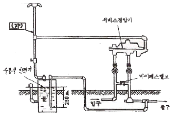
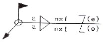
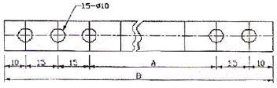
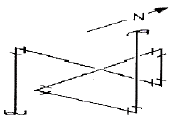
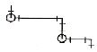
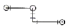
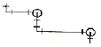
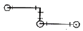

배관기능장 (2011-07-31 기출문제)
1과목: 임의구분
1. 다음 공업 배관에 많이 사용되는 감압변에 관한 설명 중 잘못 설명된 것은?
- 감압변은 고압관과 저압관 사이에 설치한다.
- 주요 부품은 스프링, 다이어프램, 파이롯트 변(pilotvalve) 등이 있다.
- 감압변 설치시에는 보통 바이패스(By-Pass)를 설치하지 않는다.
- 감압변 근처에는 압력계 및 안전변을 장치해야 한다.
(정답률: 93%)

2. 펌프의 설치 및 주변 배관 시 주의 사항이다. 틀린 것은?
- 펌프는 일반적으로 기초 콘크리트 위에 설치한다.
- 흡입관은 되도록 길게 하고 직관으로 배관한다.
- 효율을 좋게 하기 위해서 펌프의 설치 위치를 되도록 낮춰서 흡입 양정을 작게 한다.
- 흡입관의 중량이 펌프에 미치지 않도록 관을 지지하여야 한다.
(정답률: 90%)
3. 배관계의 지지 장치 설계시 지지점의 설정에 고려해야 할 사항 중 적당하지 않은 것은?
- 과대 응력의 발생이나 드레인 배출에 지장이 없도록 한다.
- 건물, 기기 등의 기존보를 가급적 이용한다.
- 집중 하중이 걸리는 곳에 지지점을 정한다.
- 밸브나 수직관 근처는 가급적 피한다.
(정답률: 72%)
4. 항상 일정한 풍량을 공급하는 공조방식으로 부하변동이 심하지 않는 경우에 적합하며, 부분적으로 부하변동이 있는 공간에 적용이 곤란한 덕트 방식으로 전공기 방식으로 분류되는 공기조화방식은?
- 정풍량 단일 덕트 방식
- 유인 유닛 방식
- 덕트 병용 팬 코일 유닛 방식
- 패키지 덕트 방식
(정답률: 85%)
5. 냉방 설비에서 공기는 어느 곳에서 냉각된 공기를 실내에 송풍 하는가?
- 응축기
- 증발기
- 수액기
- 팽창밸브
(정답률: 69%)
6. 제어에서 입력 신호에 대한 출력신호 응답 중 인디셜(inditial) 응답이라고도 하며, 입력이 단위량 만큼 단계적으로 변화될 때의 응답을 말하는 것은?
- 자기 평형성
- 과도 응답
- 주파수 응답
- 스텝 응답
(정답률: 94%)
7. 냉매의 조건을 설명 한 것 중 잘못된 것은?
- 응고점이 낮을 것
- 임계 온도는 상온보다 가급적 높을 것
- 같은 냉동 능력에 대하여 소요 동력이 클 것
- 증기의 비체적이 적을 것
(정답률: 77%)
8. 보일러 자동제어 중 연료 및 공기 유량을 조정하고 굴뚝으로 배출되는 연소가스의 유량을 제어하여 발생되는 열을 조정하는 제어는?
- 증기온도제어
- 급수제어
- 재열온도제어
- 연소제어
(정답률: 85%)
9. 온수난방의 팽창탱크에 관한 다음 설명 중 틀린 것은?
- 안전밸브 역할을 한다.
- 팽창탱크는 최고층 방열기보다 1m 이상 높은 곳에 위치하여야 한다.
- 온도변화에 따른 체적팽창을 도출 시킨다.
- 온수의 순환을 촉진시키는 역할이 주목적이다.
(정답률: 74%)
10. 건물의 외벽, 창, 지붕 등에 일정한 간격으로 배열하여 인접건물 화재 시 수막을 만드는 소화설비는?
- 방화전
- 스프링클러
- 드랜처
- 사이어미즈 커넥션
(정답률: 95%)
11. 1보일러 마력을 설명한 것으로 가장 올바른 것은?
- 50℃의 물 10kg을 1시간에 전부 증기로 변화시키는 증발능력
- 100℃의 물 15.65kg을 1시간 동안 같은 온도의 증기로 변화시키는 증발능력
- 1시간에 1565kcal의 증발량을 발생시키는 증발능력
- 1시간에 약 6280kcal의 증발량을 발생시키는 증발능력
(정답률: 82%)
12. 통기관의 관경을 결정하는 원칙 설명 중 틀린 것은?
- 신정 통기관의 관경은 관경을 줄이지 않고 연장해서 대기 중에 개방한다.
- 결합 통기관은 배수 수직관과 통기 수직관 중 관경이 작은 쪽의 관경 이상으로 한다.
- 각개 통기관의 관경은 그것에 연결되는 배수 관경의 1/2보다 작으면 안 되고 최소관경은 30mm이다.
- 루프 통기관의 관경은 배수 수평 분기관과 통기 수직관 중 관경이 큰 쪽의 1/2보다 작으면 안 되고 최소 관경은 30mm이다.
(정답률: 80%)
13. 건축설비공사 표준시방서 등의 시험기준에 의하여 배관 시험 기준에 의한 배관시험 압력은 사용압력의 몇 배로 시험하는가?
- 0.5~1
- 1.5~2
- 3~4
- 5~6
(정답률: 93%)
14. 배관용 공기기구 사용 시 안전수칙 중 틀린 것은?
- 처음에는 천천히 열고 일시에 전부 열지 않는다.
- 기구 등의 반동으로 인한 재해에 항상 대비한다.
- 공기 기구를 사용할 때는 보호구를 착용한다.
- 활동부에는 항상 기름 또는 그리스가 없도록 깨끗이 닦아 준다.
(정답률: 96%)
15. 장치 중에서 응축된 유체를 재가열 증발시킬 목적으로 사용하는 열교환기는?
- 재비기(reboiler)
- 예열기(preheater)
- 가열기(heater)
- 응축기(condenser)
(정답률: 76%)
16. 산소를 쓰는 경우에는 다음 중 어떤 장소를 선택하는 것이 가장 좋은가?
- 기름이 있는 건조한 곳
- 직사광선을 받는 밀폐된 곳
- 가연성 물질이 없고 통풍이 잘되는 곳
- 습도가 높고 고압가스가 있는 곳
(정답률: 95%)
17. 다음은 수요자 전용 가스정압기의 배관설치 도면이다. (가)에 맞는 배관 명칭은?

- 팽창관
- 방출관
- 공기공급관
- 정압기
(정답률: 90%)
18. 자동제어계에서 동작신호에 의하여 이에 대응하는 연산 출력, 즉 조작신호를 보내는 부분을 무엇이라고 하는가?
- 비교부
- 검출부
- 조절부
- 조작부
(정답률: 83%)
19. 배관설비의 유지관리에서 응급조치법의 종류가 아닌 것은?
- 코킹법과 밴드보강법
- 인젝션법
- 박스 설치법
- 파이어 설치법
(정답률: 86%)
20. 다음에서 강도율의 계산법으로 맞는 것은?
- 근로손실일수/연근로시간수×1000
- 재해건수/연근로시간수×1000
- 재해건수재/적근로자수×1000
- 근로손실일수/재적근로자수×1000
(정답률: 85%)
2과목: 임의구분
21. 다음 중 수동으로 직접 조절해야 작동되는 밸브는?
- 플로트 밸브 (float valve)
- 세정 밸브 (flush valve)
- 증발 압력조정 밸브
- 감압 밸브
(정답률: 77%)
22. 지진, 진동, 풍압, 수격작용 등에 의해 배관이 움직이는 것을 제한하기 위한 장치는 무엇인가?
- 행거
- 서포트
- 브레이스
- 리스트레인트
(정답률: 77%)
23. 배관의 용도에 따른 패킹재료가 적당하지 않은 것은?
- 급수관 - 테프론
- 배수관 - 네오프렌
- 급탕관 - 실리콘
- 증기관 - 천연고무
(정답률: 92%)
24. 몰리브덴강 및 크롬-몰리브덴강으로 이음매 없이 제조하여 증기관 및 석유정제용 배관에 적합한 강관은?
- 압력배관용 탄소강관
- 고압배관용 탄소강관
- 배관용 아크용접 탄소강관
- 배관용 합금강 강관
(정답률: 65%)
25. 과열증기에 사용이 가능하고, 수격작용에 잘 견디며 배관이 용이하나 수명이 짧고, 높은 배압에서 작동되지 않고 소음발생, 증기누설 등의 단점이 있는 트랩은?
- 디스크형 트랩
- 상향식 버킷형 트랩
- 레버 플로트형 트랩
- 하향식 버킷형 트랩
(정답률: 80%)
26. 관 이음쇠 중 리듀서(Reducer)를 사용하는 경우를 바르게 설명한 것은?
- 관의 끝을 막을 때
- 동경의 관을 도중에 분기할 때
- 직선배관에서 90° 혹은 45° 방향으로 전환할 때
- 배관의 관경을 축소하여 연결할 때
(정답률: 88%)
27. 구상흑연주철관이라고도 하며 내식성, 가요성, 충격에 대한 연성 등이 우수한 주철관은?
- 수도용 원심력 금형 주철관
- 원심력 모르타르 라이닝 주철관
- 수도용 원심력 덕타일 주철관
- 수도용 원심력 사형 주철관
(정답률: 84%)
28. 스테인리스강관의 특성에 대한 설명으로 틀린 것은?
- 위생적이어서 적수, 백수, 청수의 염려가 없다.
- 강관에 비해 기계적 성질이 우수하다.
- 두께가 얇고 가벼워 운반 및 시공이 쉽다.
- 저온 충격성이 작고 동결에 대한 저항이 작다.
(정답률: 82%)
29. 일반적인 폴리부틸렌관의 이음방법으로 맞는 것은?
- MR 이음
- 에어콘 이음
- 몰코 이음
- TS식 냉간이음
(정답률: 88%)
30. 내열성, 내유성, 내수성이 좋고 내열도는 150℃~200℃ 정도이며 베이킹 도료로 사용되는 합성수지 도료는?
- 프탈산계 도료
- 요소 멜라민계 도료
- 에폭시 수지계 도료
- 염화비닐계 도료
(정답률: 60%)
31. 스테인리스 또는 인청동제로 제작된 것으로 일명 팩레스(packless)신축이음쇠라고 부르는 것은?
- 루프형 신축이음쇠
- 슬리브형 신축이음쇠
- 스위블형 신축이음쇠
- 벨로스형 신축이음쇠
(정답률: 86%)
32. 원심력 철근 콘크리트관에 대한 설명으로 맞는 것은?
- 흉관이라고도 하며, 관의 이음재의 형상에 따라 A, B, C형으로 나눈다.
- 호칭경 150~600mm까지는 소켓 이음쇠를 사용한다.
- 에터니트관 이라고도 하며 정수두 75m 이하의 1종관과 정수두 45m이하의 2종관이 있다.
- 일반적으로 PS관이라 한다.
(정답률: 75%)
33. 호칭 20A(3/4인치) 동관의 실제 외경은 몇 mm인가?
- 19.⑤
- 22.22
- 23.15
- 25.20
(정답률: 85%)
34. 유량계 설치법에 대한 설명으로 잘못된 것은?
- 차압식 유량계의 오리피스는 원칙적으로 수직배관에 설치한다.
- 차압식 유량계의 노즐 취출방향은 액체인 경우는 하향, 기체일 경우는 상향으로 한다.
- 증기배관에는 증기가 유량계에 유입하는 것을 방지하고, 차압에 대해 일정한 액주의 높이를 유지할 수 있도록 콘덴서를 설치한다.
- 체적식 유량계와 면적식 유량계는 조작 및 보수가 쉽도록 설치한다.
(정답률: 80%)
35. 아세틸렌 용기의 충전 전 용기 무게는 50kgf, 충전 후 57kgf 이 되었다면 용기 속에 충전된 아세틸렌은 몇 리터(L)인가?
- 4245
- 4800
- 6335
- 7600
(정답률: 68%)
36. 동력나사 절삭기 사용 시 안전수칙으로 틀린 것은?
- 절삭된 나사부는 맨손으로 만지지 않도록 한다.
- 기계의 정비 수리 등은 기계를 정지시킨 후 행한다.
- 나사 절삭 시에는 계속 절삭유를 공급한다.
- 절삭기 사용 후에는 필히 척을 닫아 둔다.
(정답률: 86%)
37. 철근 콘크리트관을 하수관으로 매설할 때 관거의 최소 매설 깊이(흙 두께)로 맞는 것은? (단, 노면하중, 노반두께 및 다른 매설물의 관계, 동결심도 등은 고려치 않은 두께임)
- 80cm
- 100cm
- 150cm
- 200cm
(정답률: 63%)
38. 관 속에 온수나 냉수가 흐르고 있을 때, 고체와 유체 사이에 온도차가 있을 경우 열 이동이 일어나는 것을 의미하는 용어로 가장 적합한 것은?
- 열복사
- 열방사
- 열전달
- 대류전열
(정답률: 82%)
39. 일반적인 배관용강관(구조용 제외)의 절단에 쓰이는 쇠톱의 인치(inch)당 톱날 산수로 가장 적당한 것은?
- 14산
- 18산
- 24산
- 32산
(정답률: 70%)
40. 부속기기의 보수 및 점검을 위하여 관의 해체, 교환을 필요로 하는 곳의 이음에 적합하지 않는 이음방법은?
- 유니언 이음
- 플랜지 이음
- 플레어 이음
- 플라스턴 이음
(정답률: 73%)
3과목: 임의구분
41. 경질염화 비닐관의 이음작업에 관한 설명 중 틀린 것은?
- 삽입접합의 경우 삽입 깊이는 외경의 1.5배가 적당하다.
- 삽입접합에서의 연화 적정온도는 120~130℃이다.
- 70~80℃로 가열하면 관은 연화하기 시작한다.
- 연화변형을 한 다음 냉각하여 경화한 관은 가열하여도 본래의 모양으로 되지 않는다.
(정답률: 82%)
42. 주철관 접합 시 녹은 납이 비산하여 몸에 화상을 입히는 가장 중요한 원인으로 맞는 것은?
- 이음부에 수분이 있기 때문에
- 녹은 납의 온도가 낮기 때문에
- 녹은 압의 온도가 높기 때문에
- 납의 성분에 주석이 너무 많이 함유되었기 때문에
(정답률: 91%)
43. 서브머지드 아크 용접에서 아크전압이 증가할 때 생기는 현상이 아닌 것은?
- 아크길이가 길어진다.
- 비드 폭이 넓어진다.
- 평평한 비드가 형성된다.
- 용입이 증가한다.
(정답률: 53%)
44. 용접부의 파괴시험 검사법 중 기계적 시험 방법이 아닌 것은?
- 부식시험
- 피로시험
- 굽힘시험
- 충격시험
(정답률: 85%)
45. 펌프와 관련된 용어 중 “클수록 저양정(대유량)이 되고, 작을수록 고양정(소유량)이 된다”와 가장 관계가 밀접한 용어는?
- 단수
- 사류
- 비교회전수
- 안내날개
(정답률: 87%)
46. 배관설비에 있어서 유량계를 설치하여 유량을 측정한다. 다음과 같이 오리피스로 측정하였을 때 유량은 약 몇 m3/s인가? (단, 유량계수 Cv = 0.6, 수주차 △H = 20cm, 오리피스 축소 단면적 A = 5cm2이다.)
- 5.14x10-4m3/s
- 5.94x10-4m3/s
- 6.34x10-4m3/s
- 6.54x10-4m3/s
(정답률: 44%)
47. “아주 굵은 선 : 굵은 선 : 가는 선”의 선 굵기 비율로 맞는 것은?
- 3 : 2 : 1
- √3 : 2 : 1
- 4 : 2 : 1
- 3 : √2 : 1
(정답률: 78%)
48. 다음 그림의 용접도시기호에서 n의 문자가 의미하는 것은?

- 용접 목두께
- 용접부 길이(크레이트 제외)
- 용접부의 개수(용접 수)
- 인접한 용접부 간의 간격(피치)
(정답률: 87%)
49. 배관내 물질의 종류를 식별하기 위한 색 중 기름을 나타내는 색은?
- 흰색
- 연한 노랑
- 파랑
- 어두운 주황
(정답률: 87%)
50. 건설 또는 제조에 필요한 모든 정보를 전달하기 위한 도면으로 공정도, 시공도, 상세도로 분리되는 도면은 어느 것인가?
- 계획도
- 제작도
- 주문도
- 견적도
(정답률: 84%)
51. 다음 그림을 올바르게 설명한 것은?

- 구멍의 총수는 15개이며, A의 치수는 150mm이다.
- 드릴의 지름은 10mm이며, B의 치수는 220mm이다.
- 구멍의 총수는 15개이며, B의 치수는 220mm이다.
- A의 치수는 165mm이며, B의 치수는 230mm이다.
(정답률: 70%)
52. KS 배관의 간략도시방법으로 사용하는 선의 종류별 호칭방법에 따른 선의 적용이 서로 틀린 것은?
- 굵은 실선 : 유선 및 결합부품
- 가는 실선 : 해칭, 인출선, 치수선, 치수보조선
- 굵은 파선 : 다른 도면에 명시된 유선
- 가는 1점 쇄선 : 도급 계약의 경계
(정답률: 74%)
53. 그림과 같은 부분 조립도에 대한 평면도로 가장 적합한 것은?





(정답률: 75%)
54. 입체 배관도로 배관의 일부분만을 작도하는 도면으로 부분 제작을 목적으로 하는 도면의 명칭은?
- 평면 배관도
- 입면 배관도
- 부분 배관도
- 입체 배관도
(정답률: 94%)
55. 관리도에서 측정한 값을 차례로 타점했을 때 점이 순차적으로 상승하거나 하강하는 것을 무엇이라 하는가?
- 연(run)
- 주기(cycle)
- 경향(trend)
- 산포(dispersion)
(정답률: 76%)
56. 어떤 측정법으로 동일 시료를 무한회 측정하였을때 데이터 분포의 평균치와 참값과의 차를 무엇이라 하는가?
- 재현성
- 안정성
- 반복성
- 정확성
(정답률: 84%)
57. 컨베이어 작업과 같이 단조로운 작업은 작업자에 게 무력감과 구속감을 주고 생산량에 대한 책임감을 저하시키는 등 폐단이 있다. 다음 중 이러한 단조로운 작업의 결함을 제거하기 위해 채택되는 직무설계방법으로서 가장 거리가 먼 것은?
- 자율경영팀 활동을 권장한다.
- 하나의 연속작업시간을 길게 한다.
- 작업자 스스로가 직무를 설계하도록 한다.
- 직무확대, 직무충실화 등의 방법을 활용한다.
(정답률: 88%)
58. 정상소요기간이 5일이고, 이때의 비용이 20,000원이며 특급소요기간이 3일이고, 이때의 비용이 30,000원이라면 비용구배는 얼마인가?
- 4,000원/일
- 5,000원/일
- 7,000원/일
- 10,000원/일
(정답률: 73%)
59. “무결점 운동”으로 불리는 것으로 미국의 항공사인 마틴사에서 시작된 품질개선을 위한 동기부여 프로그램은 무엇인가?
- ZD
- 6시그마
- TPM
- ISO 9001
(정답률: 86%)
60. 도수분포표를 작성하는 목적으로 볼 수 없는 것은?
- 로트의 분포를 알고 싶을 때
- 로트의 평균치와 표준편차를 알고 싶을 때
- 규격과 비교하여 부적합품률을 알고 싶을 때
- 주요 품질항목 중 개선의 우선순위를 알고 싶을 때
(정답률: 61%)